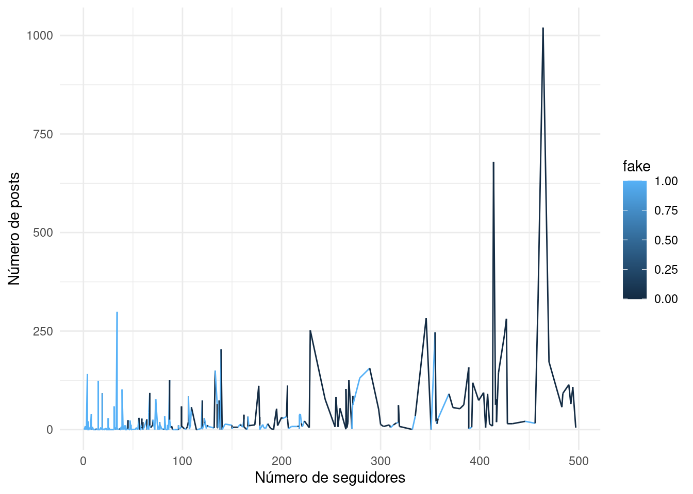

library(ggplot2)
library(magrittr)
library(highcharter)
library(ggthemes)
library(dplyr)
data_instagram <- read.csv("train.csv")Visualización
Para este capítulo, será necesario utilizar la librería ggplot, que permite de forma sencilla crear gráficos para observar de forma más visual algunos datos del dataset y, con suerte, extraer información relevante sobre ellos.
¿Existe relación entre el número de seguidores y seguidos?
Para empezar, veamos una nube de puntos que muestre la relación entre el número de seguidores y seguidos de cada usuario en función de si la cuenta es falsa o no.
# Para verlo con mayor facilidad, he acotado por donde están la mayoría de puntos
data_instagram[(data_instagram$X.followers<1000 & data_instagram$X.follows<1000),] %>%
ggplot(aes(x=X.follows, y=X.followers)) +
geom_point(aes(color = fake)) +
labs(x="Número de seguidos", y="Número de seguidores") +
theme_minimal()Como ya sabíamos, la mayoría de cuentas falsas tienen pocos seguidores y, además, suelen seguir a pocas personas. También parece que la cantidad de seguidores y seguidos suele ser algo proporcional para aquellas cuentas que no son falsas. Esta proporcionalidad parece que no es tan notable en las cuentas falsas, pues suelen tener pocos seguidores como norma general.
Todo esto se verá más claro si lo pasamos a escala logarítmica.
data_instagram[(data_instagram$X.followers<1000 & data_instagram$X.follows<1000),] %>%
ggplot(aes(x=X.follows, y=X.followers)) +
geom_point(aes(color = fake)) +
labs(x="Número de seguidos", y="Número de seguidores") +
scale_x_log10() +
theme_minimal()¿Cuántas publicaciones suele tener una cuenta?
data_instagram[data_instagram$X.posts<50,] %>%
ggplot(aes(x=X.posts)) +
geom_histogram(stat="count",fill="lightgreen") +
labs(x="Número de publicaciones") +
theme_minimal()Observamos que el histograma tiene tendencia descendente, por lo que la mayoría de cuentas tienen una cantidad pequeña de publicaciones. Sin embargo, las cuentas falsas pueden estar introduciendo ruido a este resultado, por lo que veámolas por separado.
data_instagram[data_instagram$X.posts<50,] %>%
ggplot(aes(x=X.posts)) +
geom_histogram(stat="count",fill="lightgreen") +
labs(x="Número de publicaciones") +
facet_wrap(~fake) +
theme_minimal()Como habíamos supuesto, la gran mayoría de cuentas con ninguna o muy pocas publicaciones son falsas.
¿Cómo suele configurar un usuario su cuenta?
El siguiente paso, será estudiar la información que proporciona sobre sí mismo un usuario al uso, es decir, veremos si suelen tener descripciones o nombres de usuario largos, si tienen URL o si los perfiles suelen ser públicos o privados.
# DUDA
count_profile.pic <- data_instagram %>%
count(profile.pic, fake)
count_external.URL <- data_instagram %>%
count(external.URL, fake)
count_private <- data_instagram %>%
count(private, fake)
count_name..username <- data_instagram %>%
count(name..username, fake)
counts_hchart <- bind_rows(
mutate(count_profile.pic, variable = "tiene_foto_perfil"),
mutate(count_external.URL, variable = "tiene_url_externa"),
mutate(count_private, variable = "cuenta_privada"),
mutate(count_name..username, variable = "username")
)
hchart(counts_hchart, "column", hcaes(x = variable, y = n, group = fake)) %>%
hc_title(text = "Configuración usuarios reales frente a falsos") %>%
hc_add_theme(hc_theme_hcrt())También será interesante ver la longitud de las descripciones, pues es probable que las cuentas falsas se encuentren principalmente en el grupo con descripciones de menor longitud.
descripciones <- cut(data_instagram$description.length,
breaks = c(-1, 0, 22, 100, 151),
labels = c("None", "Short", "Medium", "Large"))
data_instagram <- cbind(data_instagram, descripciones_size=descripciones)ggplot(data = data_instagram, aes(x = "", fill = descripciones_size)) +
geom_bar() +
coord_polar("y", start = 0) +
theme_void() +
scale_fill_manual(values = c("None" = "brown2", "Short" = "gold", "Medium" = "lightskyblue", "Large" = "palegreen")) +
facet_wrap(~fake)¿Influye la actividad de una cuenta en su número de seguidores?
data_instagram[data_instagram$X.followers>2000 & data_instagram$X.followers<20000,] %>%
ggplot(aes(x=X.followers, y=X.posts)) +
geom_line(aes(color=fake)) +
labs(x="Número de seguidores", y="Número de posts") +
theme_minimal()Tras acotar dentro de unos parámetros razonables, parece que no hay una relación directa entre subir muchas publicaciones y tener muchos seguidores. Aunque si que podemos observar que la gran mayoría de cuentas que entran dentro de estos valores son reales.
Quizá sea más interesante ver esta misma gráfica, pero para niveles bajos.
data_instagram[data_instagram$X.followers>0 & data_instagram$X.followers<500,] %>%
ggplot(aes(x=X.followers, y=X.posts)) +
geom_line(aes(color=fake)) +
labs(x="Número de seguidores", y="Número de posts") +
theme_minimal()
Para estos valores parece que se complica la acción de diferencias aquellas cuentas que son reales de las que no. Por tanto, es probable que en el futuro necesitemos de la ayuda de otros atributos para sacar conclusiones con menor grado de incertidumbre.
Tras el análisis exploratorio y la visualización de los datos, hemos conseguido adentrarnos de forma más detallada en nuestro conjunto de datos y ya estamos preparados para ir un paso más allá. Es por esto, que en el siguiente capítulo nos centraremos en crear reglas de asociación, que es una técnica de aprendizaje no supervisado que nos ayudará a extraer piezas de conocimiento bastante interesantes.